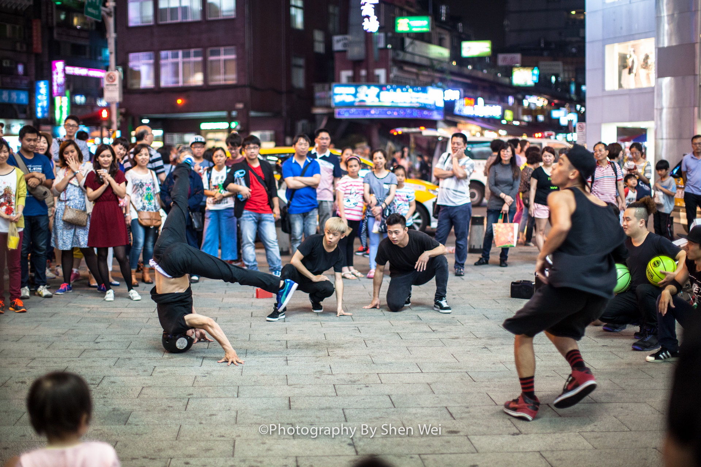
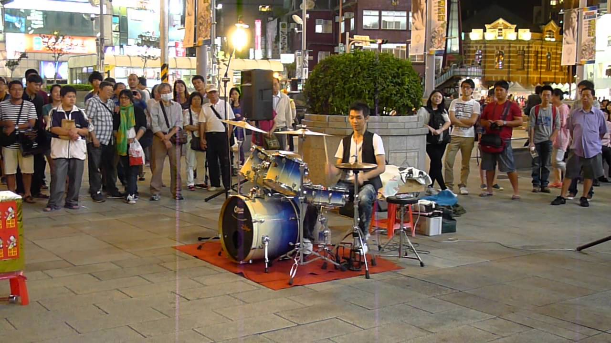
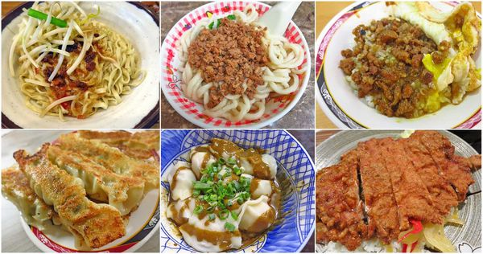

走走逛逛
街頭藝人


指在公共場所為公眾表演拿手絕活的藝人，包括在街頭表演的音樂家、畫家、行為藝術家等。街頭藝人的表演形式繁多，例如歌唱、舞蹈、偶戲、口技、默劇、樂器演奏，畫畫，雜耍表演、說書等等。 在世界上許多大城市都有街頭藝人的表演。 他們的表演又被稱為街頭藝術或街頭表演。
特色小吃

常常都會有人問台北西門町有什麼好吃的美食,有什麼推薦的美食，好吃的美食小吃呢？相信有不少人有這樣子的問題,在此布特別製作西門町美食懶人包,把這裡內行人才知道的隱藏版美食一次介紹給大家!!
分別是(由左到右依序往下排列)
【西門町美食】台南意麵水餃-西門町的超便宜宵夜美食
【西門町美食】元之寶拉麵-隱藏在西門町巷弄裡的美食小吃
【西門町美食】天天利美食坊-西門町CP值最高的銅板美食
【西門町美食】店小二-隱身在熱鬧商圈地下室裡的高CP值美食
【西門町美食】大程餃子麵館-酸酸甜甜辣辣香香的麻辣乾餃
【西門町美食】一級排骨-厚度1公分以上隱身西門町的排骨飯